Nazywam się Alessandro Del Piero i gram w piłkę nożną. Mogę powiedzieć, że spełniło się moje marzenie.
Los nie mógł być dla mnie bardziej łaskawy.
Alex Del Piero
Cassano miał 700 kobiet, ale trener przestał powoływać go do reprezentacji. Czy więc faktycznie jest szczęśliwym człowiekiem?
Andrea Pirlo
Nie jestem piłkarzem, którego miło się ogląda, nie mam też na koncie żadnego wielkiego zwycięstwa. Nie mogę konkurować z mistrzami pokroju Raula, Figo czy Zidane'a.
Pavel Nedved
Jedyną rzeczywistością jest boisko i to ono, tylko ono, jest prawdziwym miernikiem ambicji i siły marzeń.
Antonio Conte
Gigi Buffon
Gigi jest dla mnie punktem odniesienia. Marzyłem, by stać się tak dobry, jak on. Gra przeciwko niemu to dla mnie za każdym razem prawdziwy zaszczyt.
Antonio Conte
Conte trochę przypomina mi mnie samego. Nic dziwnego, że niektórzy fani nazywają go „włoskim Special One”. Wie, czego chce, i jest prawdziwym charyzmatycznym zwycięzcą.
Pavel Nedvěd
Blond czupryna Nedvěda i jego niezapomniane rajdy, gdy pędził skrzydłem niczym koń pociągowy, to jeden z powodów, dla których pokochałem futbol. Grazie Pavel!
NOWOŚĆ
Pavel Nedvěd
Piłkarze odchodzą, mężczyźni zostają, czyli moje zwyczajne życie.
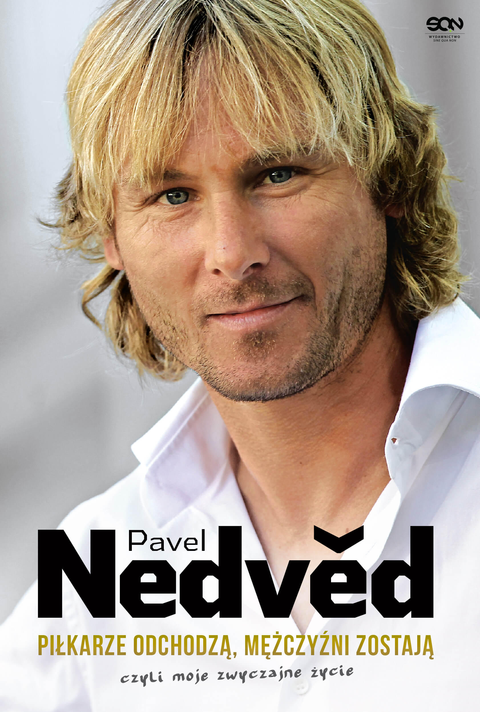
Zwyczajne życie Pavla Nedvěda
Nigdy nie był piłkarzem, którego wybryki trafiały na czołówki gazet. Na co dzień małomówny, opanowany i skromny. Ale kiedy wychodził na boisko, stawał się prawdziwym wulkanem energii. Pavel Nedvěd opowiada o drodze z małej miejscowości w Czechosłowacji do tytułu najlepszego piłkarza świata.
„Kiedy dorosnę, chcę zostać piłkarzem. Kiedy dorosnę, chcę grać w piłkę nożną. To wspaniały zawód. To moje marzenie” – tak mógł napisać w szkolnym wypracowaniu. Zamiast tego nauczyciele przeczytali, że chciałby być elektrykiem, tak jak tata, albo kucharzem lub kierowcą ciężarówki. Na szczęście Alessandro Del Piero miał dość odwagi, żeby wziąć sprawy w swoje ręce, zrealizować dziecięce marzenie i żyć nim do dzisiaj...
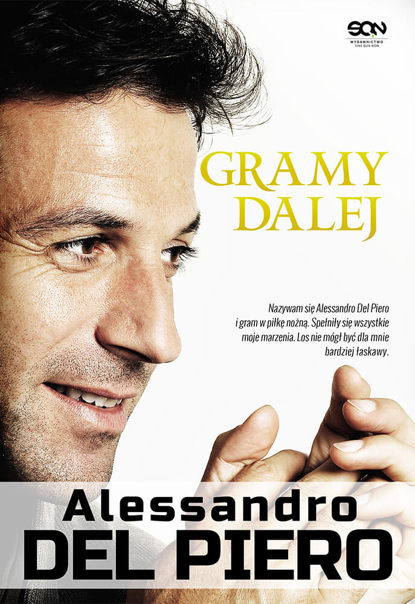
Antonio Conte. Głowa, serce i nogi
Oto Antonio Conte, człowiek, który przywrócił Juventusowi utęsknioną chwałę i dumę. Przez trzynaście lat rozegrał w koszulce Bianconerich ponad 400 meczów. W 2004 roku zawiesił korki na kołku i zaczął od zera, idąc pod wiatr. Po latach cennej praktyki w m.in. Arezzo, i Sienie otworzyły się przed nim drzwi do domu: do współpracy przy odbudowie klubu zaprosili go szefowie Juventusu, on zaś już w pierwszym sezonie spędzonym w Turynie zdobył scudetto.
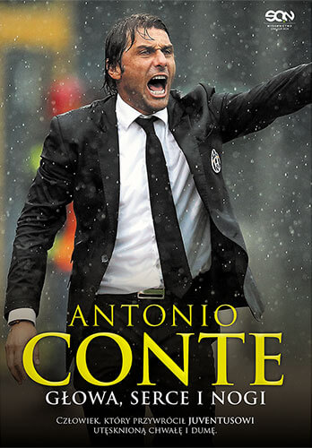
Andrea Pirlo. Myślę, więc gram
Książka arcydzieło. Brutalnie szczera, prowokująca, zabawna, wzruszająca. Napisana z niesamowitą erudycją i wyjątkowym zmysłem autoironii. Fascynujące wspomnienia, tysiące anegdot, wstydliwe sekrety kolegów z szatni.
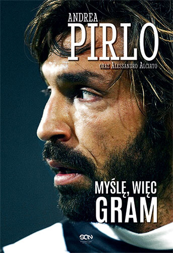
Gigi Buffon. Numer 1
Wolał grać w drugiej lidze niż opuścić ukochany Juventus.
W reprezentacyjnej i klubowej piłce wygrał niemal wszystko.
O swoim życiu i karierze.
Marzeniach i życiowych dramatach.
Szczerze, przewrotnie, ironicznie.
Piłkarska autobiografia numer 1.
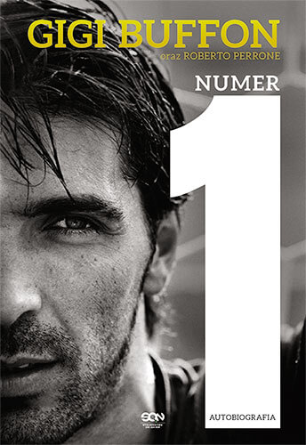
Opinie czytelników
Dominik Góralczyk
Jakie wrażenia? Ano takie, że nie mogłem sobie w życiu wybrać lepszej osoby za wzór i autorytet. Bo jeśli piłkarzem jest genialnym, to człowiekiem jeszcze większym. Płakałem kilka razy. Zachwycam się Nim jeszcze bardziej niż kiedykolwiek, jeśli to możliwe.
Katarzyna Cygan
Genialna książka o genialnym piłkarzu. Po jej przeczytaniu całkowicie zmieniłam opinię o Pirlo. Nie przepadałam za nim, teraz natomiast cenię go za to jaki jest, za co co osiągnął. W książce pokazuje swoją drogę do piłkarskiej elity, dzieli się swoimi przemyśleniami i ukazuje realia piłki nożnej we Włoszech. Pozycje obowiązkowa według mnie dla każdego kibica piłki nożnej. Gorąco polecam!
Zobacz więcej
Jakub P.
Genialna książka. Czyta się praktycznie jednym tchem. Taką historie spokojnie można by zekranizować i dobry film gwarantowany. Szkoda, że taka krótka bo te 200 stron to w mgnieniu oka przeczytane....niestety;(
Przemek Kryszak
Życie Gigiego opisane jak sposób bycia chłopaka z osiedla. Imprezy, pierwsze kroki w futbolu, kryzysy i błyskotliwa kariera piłkarska. Gigi to Najlepszy Bramkarz Świata wszech czasów.
Mario
Ja mam tą książkę. Przed momentem ją właśnie przeczytałem. Dla mnie jest ona genialna. Nie każdy zrozumie tą książkę tak jak kibic Juventusu. Nie wyrażam tej opinii po to by wygrać książkę, gdyż ją już mam, ale dlatego, żeby nakłonić każdego wahającego się nad zakupem tej książki kibica Juve. Naprawdę warto wydać te 40 zł na książkę. Pozdrawiam.
Sebastian Tymczyszyn
Autobiografia Pirlo to istny majstersztyk, niczym jego podcinka w karnych z Anglią, znacznie wyróżnia się na tle innych. Jest wprost oszałamiająca, w każdym rozdziale Andrea zabiera nas w niezwykłą podróż. Zaskakuje szczerością i bezpośredniością, czytając jego dzieło czujesz, jakbyś był świadkiem zawartych w nim wydarzeń.
Ukryj
W rękach gwiazd
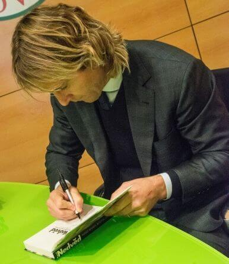
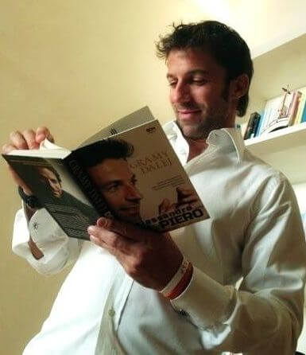
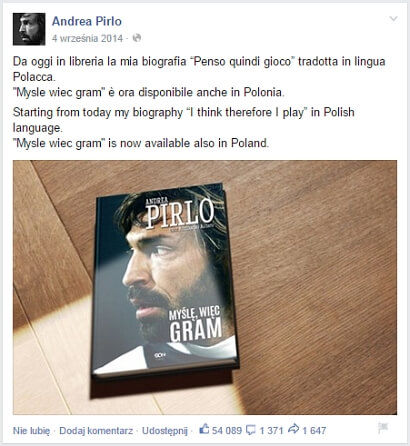
Pavel Nedvěd. Piłkarze odchodzą, mężczyźni zostają, czyli moje zwyczajne życie
Nigdy nie był piłkarzem, którego wybryki trafiały na czołówki gazet. Na co dzień małomówny, opanowany i skromny. Ale kiedy wychodził na boisko, stawał się prawdziwym wulkanem energii.
Wicemistrzostwo Europy, dzięki któremu doczekał się potomstwa. Jan Koller przedkładający pracę w banku nad grę w Sparcie Praga. Paskudny charakter Roberto Manciniego, dwa oblicza Zlatana Ibrahimovicia i potrójne sombrero zafundowane przez Cafu, które przyjął jako... zaszczyt!
Pavel Nedvěd opowiada o drodze z małej miejscowości w Czechosłowacji do tytułu najlepszego piłkarza świata. Zdradza, co czuł, kiedy sędzia wykluczał go z udziału w finale Ligi Mistrzów. I wyjaśnia, dlaczego pozostał wierny Juventusowi mimo degradacji i kuszącej oferty José Mourinho.
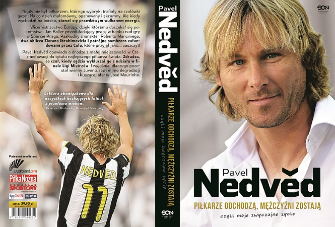
Zobacz nasz wywiad z Pavlem Nedvedem
Alessandro Del Piero. Gramy Dalej
„Kiedy dorosnę, chcę zostać piłkarzem. Kiedy dorosnę, chcę grać w piłkę nożną. To wspaniały zawód. To moje marzenie” – tak mógł napisać w szkolnym wypracowaniu. Zamiast tego nauczyciele przeczytali, że chciałby być elektrykiem, tak jak tata, albo kucharzem lub kierowcą ciężarówki.
Na szczęście Alessandro Del Piero miał dość odwagi, żeby wziąć sprawy w swoje ręce, zrealizować dziecięce marzenie i żyć nim do dzisiaj. W Gramy dalej snuje historię najmniejszego i najbardziej nieśmiałego chłopaka w prowincji San Vendemiano, który stał się jednym z najlepszych piłkarzy na świecie. Po dwudziestu latach niestrudzonego grania w Juventusie Del Piero wciąż pozostaje taki sam: na boisku prezentujący prawdziwą wirtuozerię, pełen entuzjazmu i poświęcenia dla kolegów z drużyny, napędzany pragnieniem pokonywania kolejnych wyzwań, a przede wszystkim marzący o ciągłej grze w piłkę.
Gramy dalej to szczera i odważna książka. Mistrz opowiada o tym, co dla niego najważniejsze: talent, pasja, przyjaźń, wytrwałość, uczciwość, piękno, duch drużyny, poświęcenie, styl i wyzwanie – te pojęcia ukształtowały go i sprawiły, że Alessandro Del Piero znalazł się na ustach milionów kibiców.
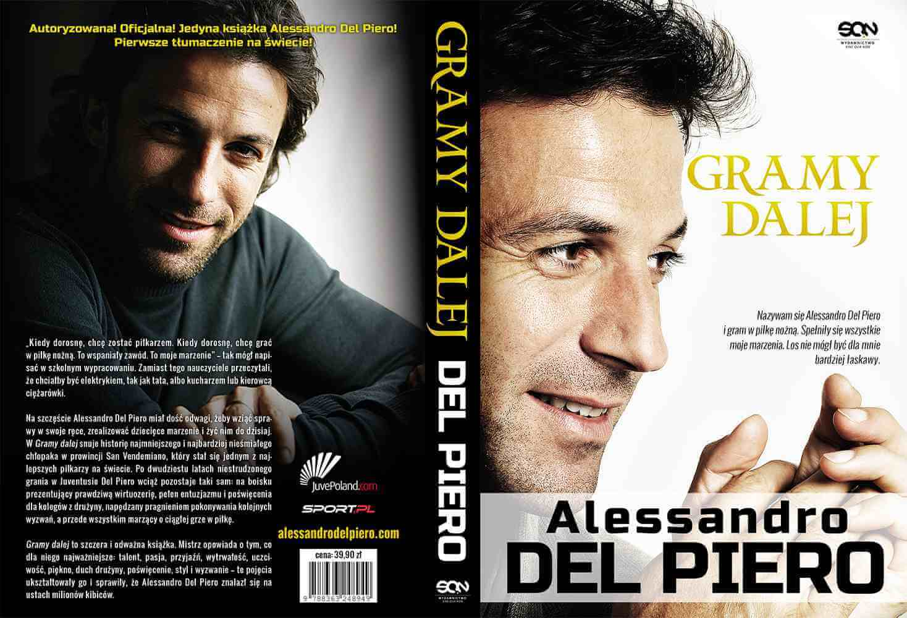
Promo video
Antonio Conte. Głowa, serce i nogi
Oto Antonio Conte, człowiek, który przywrócił Juventusowi utęsknioną chwałę i dumę. Przez trzynaście lat rozegrał w koszulce Bianconerich ponad 400 meczów. W 2004 roku zawiesił korki na kołku i zaczął od zera, idąc pod wiatr. Po latach cennej praktyki w m.in. Arezzo, i Sienie otworzyły się przed nim drzwi do domu: do współpracy przy odbudowie klubu zaprosili go szefowie Juventusu, on zaś już w pierwszym sezonie spędzonym w Turynie zdobył scudetto.
Teraz, kiedy Juventus odzyskał piłkarską hegemonię we Włoszech i na nowo święci triumfy na najznakomitszych arenach Europy, Conte przekracza przysłowiowe granice własnej prywatności, by szczerze opowiedzieć o sobie oraz o nauczycielach, kolegach i przeciwnikach, o najpiękniejszych meczach i największych rozczarowaniach. Zawsze z podniesioną głową, nawet kiedy latem 2012 roku rozpętała się nad nim sądownicza burza calcioscommesse, w wyniku której przez cztery miesiące musiał oglądać mecze własnej drużyny wyłącznie z daleka.
Antonio Conte debiutował jako piłkarz klubu z rodzinnego miasta, by po latach stać się jedną z legend Juventusu, gdzie grał od 1991 do 2004 roku. Z drużyną bianconerich zdobył 5 tytułów mistrzowskich, Puchar Włoch, cztery Superpuchary Włoch, puchar Ligi Mistrzów, Puchar Interkontynentalny, Puchar UEFA i Superpuchar Europy. Z reprezentacją Włoch sięgnął po wicemistrzostwo świata w 1994 roku oraz wicemistrzostwo Europy w 2000. Zanim trafił na ławkę trenerską Juventusu, był szkoleniowcem Arezzo, Bari, Atalanty i Sieny.
.
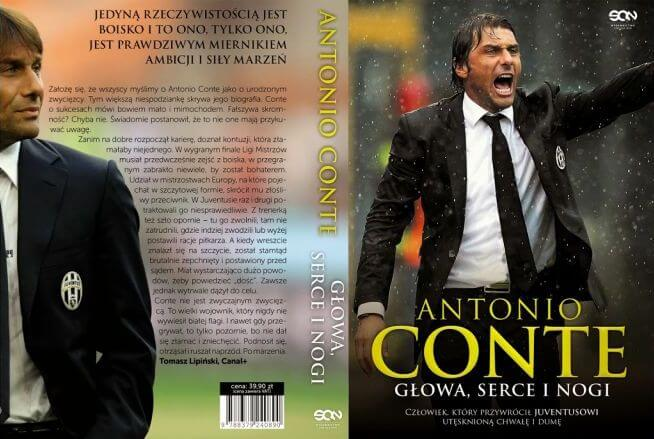
Promo video
Andrea Pirlo. Myślę, więc gram
Książka arcydzieło. Brutalnie szczera, prowokująca, zabawna, wzruszająca. Napisana z niesamowitą erudycją i wyjątkowym zmysłem autoironii. Fascynujące wspomnienia, tysiące anegdot, wstydliwe sekrety kolegów z szatni.
Jego wielkie kluby (Inter, Milan, Juventus) i te, w których ostatecznie nie zagrał (kulisy negocjacji z Barceloną, Realem, Chelsea, szejkami). Przyjaźń z Nestą, szaleństwa Gattuso i Gilardino, łzy Del Piero, inteligencja Buffona. Przeklęte 3:3 z Liverpoolem, karny w finale MŚ i kpiny ze Złotej Piłki.
Cassano miał 700 kobiet, ale trener przestał powoływać go do reprezentacji. Czy więc faktycznie jest szczęśliwym człowiekiem? - tak na życie może patrzeć tylko Andrea Pirlo.
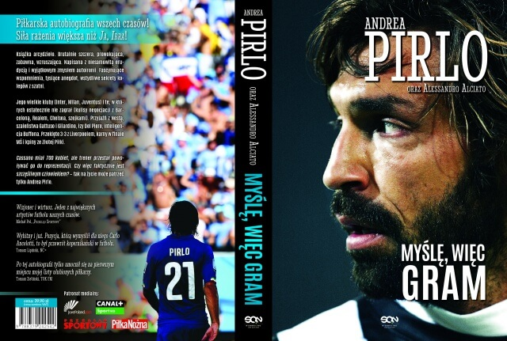
Promo video
Gigi Buffon. Numer 1
Wolał grać w drugiej lidze niż opuścić ukochany Juventus.
W reprezentacyjnej i klubowej piłce wygrał niemal wszystko.
O swoim życiu i karierze.
Marzeniach i życiowych dramatach.
Szczerze, przewrotnie, ironicznie.
Piłkarska autobiografia numer 1.